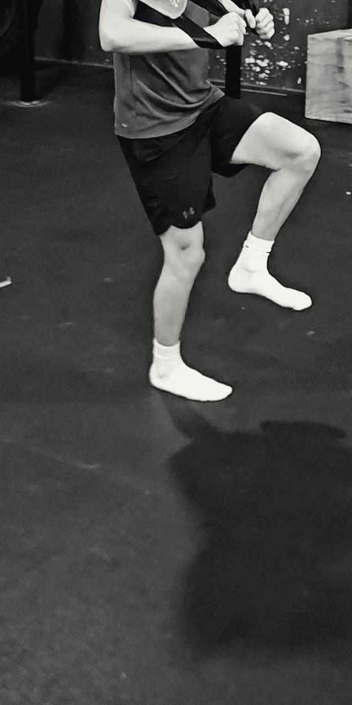
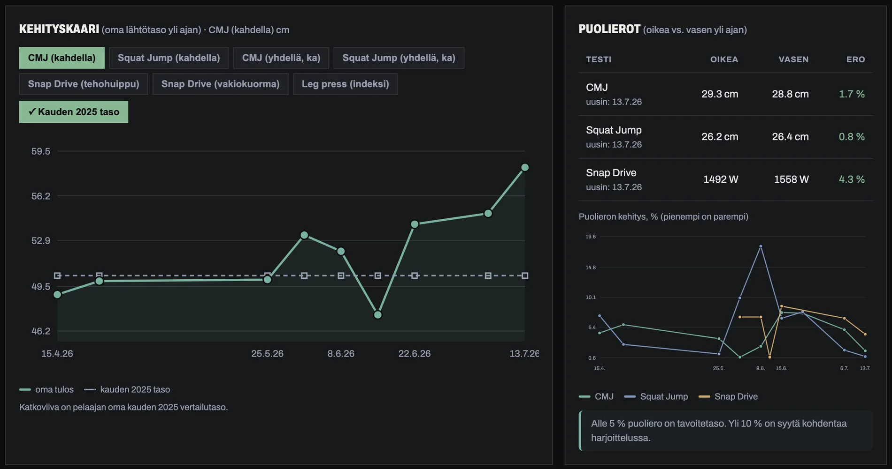

Speed Nopeus
Elastinen, rytminen nopeus, ei painava voimantuotto.



SBAQ Academy · jääkiekon fysiikkavalmennus ja testaus
Emme rakenna pelaajaa kuntosalia tai laboratoriota varten. Rakennamme pelaajan, joka on parhaimmillaan siellä, missä sillä on eniten merkitystä: pelitilanteessa, kovassa vauhdissa ja kontaktissa. Kaikki, mitä salilla tehdään, mitataan, ja harjoittelun vaikutuksen pitää näkyä jäällä.
Mitataan · Kehitetään · Siirretään jäälle
Perinteinen kysymys
Kuinka paljon pelaaja tuottaa voimaa?
SBAQ:n kysymys
Pystyykö pelaaja jarruttamaan, hallitsemaan kehoaan ja tuottamaan uuden liikkeen sekunnin murto-osassa?
SBAQ ei ole yksittäinen harjoite eikä uusi fysiikan teoria. Se on tapa yhdistää nopeus, tasapaino, ketteryys, reagointi ja voimantuotto samaan harjoitteluun niin, että niiden pitäisi lopulta näkyä parempana liikkumisena jäällä.
Elastinen, rytminen nopeus, ei painava voimantuotto.


Yhden jalan dynaaminen hallinta ja keskivartalon stabiliteetti.


Suunnanvaihdot tasapainon säilyttäen.


Reaktiivinen snap: jalan nopea irtiotto rangan elastisuudella.
Kuvasarjat ovat liikkeen peräkkäisiä ruutuja. Vie osoitin kuvan päälle tai napauta, niin sarja pyörii.
Väline · vesisäkki
Vesi liikkuu jatkuvasti säkin sisällä. Hermosto ja keho joutuvat ratkaisemaan tasapainon ja voimantuoton ongelman uudelleen joka sekunti, aivan kuten jäällä. Tavoite ei ole nostaa mahdollisimman suurta painoa, vaan kehittää hermoston kykyä hallita liikettä nopeasti muuttuvissa tilanteissa.
Levytanko rakentaa maksimivoiman. Vesisäkki tekee siitä hallittavaa pelinopeudessa. Kumpikin tarvitaan.
Väline · BOSU
Luistelun liuku on yhden jalan tasapainotehtävä kapealla, epävakaalla alustalla. Juuri sitä BOSU harjoittaa. Mitä automaattisemmin tasapaino löytyy, sitä pidempi, rennompi ja taloudellisempi liuku.
BOSU ei opeta liukua suoraan. Se rakentaa sen perustan, ja liuku itse hioutuu vain jäällä.
Yksittäinen testipäivä kertoo vähän. Arvo syntyy siitä, että sama pelaaja mitataan uudelleen ja lukuja verrataan johonkin mielekkääseen.

Kaikki numerot lasketaan suoraan syötetystä testidatasta.
| Ilman työkalua | SBAQ:n kanssa | |
|---|---|---|
| Tallennus | Tulokset hajallaan Exceleissä, papereilla ja valmentajien puhelimissa. | Kaikki testikerrat samassa paikassa, pelaajakohtaisena aikajanana. |
| Vertailu | Vertailukohtaa ei ole: onko 4,20 sekuntia hyvä 16-vuotiaalta U18-pelaajalta? | Jokainen tulos suhteutetaan siihen sarjaan ja ikään, jossa pelaaja silloin oli. |
| Konteksti | Kasvupyrähdys tai loukkaantuminen selittää notkahduksen, mutta sitä ei ole kirjattu mihinkään. | Loukkaantumiset, sairastelut ja kasvupyrähdykset merkitään dataan, joten notkahdukset selittyvät. |
| Pelaaja | Pelaaja ei näe omaa kehitystään, joten testipäivä tuntuu pakolliselta rutiinilta. | Pelaaja näkee oman kehityskaarensa ja saa tulostettavan analyysin. |
| Jatkuvuus | Kun valmentaja vaihtuu, historia katoaa. | Historia säilyy seuralla, ei yksittäisellä valmentajalla. |
SBAQ Academy tekee yhteistyötä suuren kansainvälisen Sport Labin kanssa. Testauslaitteet ja menetelmät on valittu tukemaan juuri niitä ominaisuuksia, joita SBAQ kehittää: nopeaa voimantuottoa, elastista tehoa ja pelinomaista reagointia. Tavoite on tehdä harjoittelusta mitattavaa ja tavoitteellista. Puolierot mitataan erikseen.
| Nro | Osa-alue | Testi | Mitä saadaan? |
|---|---|---|---|
| 01 | KestävyysHapenottokyky | Suora hapenottotesti juoksumatolla hengityskaasuanalyysillä. |
|
| 02 | NopeusKiihdytys, sali ja jää | Valokennomittaus molemmissa ympäristöissä, jotta nähdään, siirtyykö teho luisteluun. |
|
| 03 | Reaktio ja ketteryysPelinomainen reagointi | Valostimuluksiin perustuvat testit suunnanmuutoksista ja reagoinnista. |
|
| 04 | Voima ja tehoRäjähtävyys ja puolierot | Kuinka paljon voimaa pelaaja tuottaa ja ennen kaikkea kuinka nopeasti? |
|
Jokaisella testikerralla kirjataan lisäksi ikä, pituus, paino ja sarjataso, jotta tulokset ovat suhteutettavissa myöhemmin. Eri testien lukuja ei verrata ristiin: esimerkiksi Keiser-jalkaprässin W/kg ei ole vertailukelpoinen Wingate-pyörätestin viitearvojen kanssa.
SBAQ kehittää nopeaa voimantuottoa ja elastista tehoa, ei maksimivoimaa. Siksi seurannan painopiste on tehossa ja sen kehityksessä: maksimivoima voi pysyä paikallaan samalla kun räjähtävyys nousee voimakkaasti. Työkalu on rakennettu näyttämään juuri tämä ero.
Keho toimii yhtenä kokonaisuutena, ei erillisinä lihaksina. Voima syntyy keskivartalosta ja siirtyy elastisena ketjuna jalkaan ja jäähän.
Ensin hermoston kyky käyttää voimaa, vasta sen päälle lisää voimaa ja massaa. Näin uusi lihasmassa on toiminnallista.
Jaksotettu kuormitus tuottaa väliaikaisia notkahduksia testituloksiin. Kun ne on kirjattu, käyrän muoto on tulkittavissa oikein.
SBAQ ei perustu yhteen teoriaan, vaan yhdistää seitsemän lähestymistapaa: Spinal Engine (Gracovetsky) · Triphasic (Dietz) · plyometriikka (Chu) · räjähtävä voima (Verkhoshansky) · hermosto ja taitokaaos (Marinovich) · faskialinjat (Myers, Gibbons) · motorinen oppiminen (Newell).
 01
01 02
02 03
03Viisi periaatetta, joista SBAQ-harjoittelu tunnistetaan
| Perinteinen valmennus | SBAQ | |
|---|---|---|
| Lähtökohta | Fysiologia ja mittarit. Ominaisuuksia tarkastellaan enimmäkseen erikseen. | Liike ja hermosto. Keho nähdään kokonaisuutena: faskia, selkäranka ja hermosto yhdessä. |
| Harjoittelu | Lineaarinen ja jaksotettu. Voima, nopeus ja kestävyys harjoitellaan erillisinä osina. | Integroitu ja rytmitetty. Nopeus, voima ja koordinaatio kehitetään samassa liikeradassa: jarrutus, pito, työntö. |
| Stressi | Negatiivinen kuorma, jota hallitaan ja minimoidaan. | Oikein annosteltuna kehityksen ehto. Palautumista säädetään yksilöllisesti hermoston tilan mukaan. |
| Painopiste | Kuinka paljon kuormitusta? | Miten voima tuotetaan? Katse on liikkeen laadussa ja hermostollisessa hallinnassa. |
Ei joko tai, vaan sekä että. SBAQ ei kumoa perinteistä valmennusta, se täydentää sitä: perinteinen antaa tutkitun rungon ja seurannan, SBAQ tuo liikkeen laadun.
Yhteinen kokemus
Emme tee tätä yksin. Yhteistyössä ovat mukana Suomen johtavia taitoluisteluvalmentajia, eliittitason CrossFit-urheilijoita ja suuri kansainvälinen Sport Lab, jonka kanssa kehitämme uusia testejä ja testauslaitteita.
Seurantatyökalu on kehitysvaiheessa. Tässä mitä on valmiina ja mitä tehdään seuraavaksi.
| Valmis | Selaimessa toimiva työkalu | Pelaajalista, pelaajanäkymä kehityskaarineen, vertailu, tulosten syöttö ja tulostettava raportti. Toimii ilman asennusta ja ilman ulkoisia kirjastoja. |
|---|---|---|
| Valmis | Oikea testidata | Työkalu ajaa todellisia mittaustuloksia kevään ja kesän 2026 testijaksolta: kaksi pelaajaa, 20 testikertaa. Pelaajien nimet on pseudonymisoitu, mittausarvot ovat alkuperäisiä. |
| Työn alla | Taustatiedot testikertoihin | Ikä, pituus, paino ja sarjataso jokaiselle testikerralle. Ilman niitä tuloksia ei voi suhteuttaa ikään eikä sarjatasoon, vaan vain pelaajan omaan lähtötasoon. |
| Seuraavaksi | Tallennus ja kirjautuminen | Tietokanta, käyttäjätunnukset ja roolit, jotta seuran data säilyy turvallisesti ja pelaaja näkee vain omansa. |
| Seuraavaksi | Viitearvot | Julkaistut normit ja kertyneet kokemusarvot vertailukohdaksi sarjatasoittain ja ikäluokittain. |
| Seuraavaksi | AI-avusteinen raportti | Numerot lasketaan datasta, ja kielimalli kirjoittaa niistä valmentajalle ja pelaajalle luettavan tulkinnan ja suositukset. |
Kenelle?
Jääkiekkoseurat / Urheiluakatemiat / Fysiikkavalmentajat / Fysioterapeutit / Maajoukkuepolut / Yksittäiset pelaajat
Ensisijaisesti jääkiekkoon, mutta patteristo ja logiikka toimivat missä tahansa lajissa, jossa nopeutta, ketteryyttä ja voimantuottoa testataan toistuvasti.